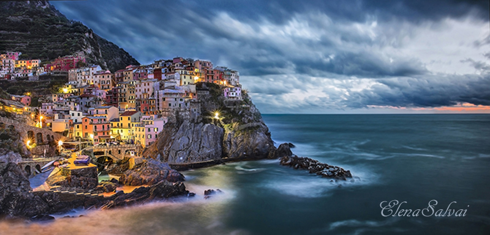

| Manarola ha avuto origine dalla migrazione di popolazioni che dalla Val di Vara e dall'insediamento romano di Volastra si sono mosse verso il mare per sfruttarne le risorse. Il suo nome deriva, forse, dal latino Manium arula, che significa "piccolo tempio dedicato ai Mani", ma questa etimologia rimane ancora molto incerta. |
 |